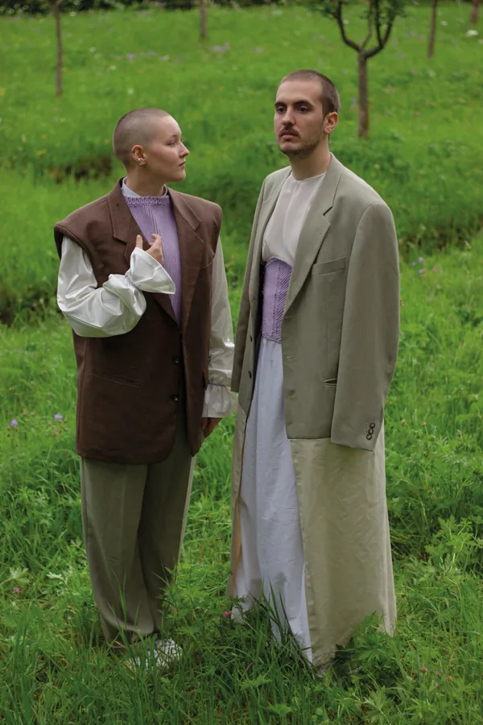
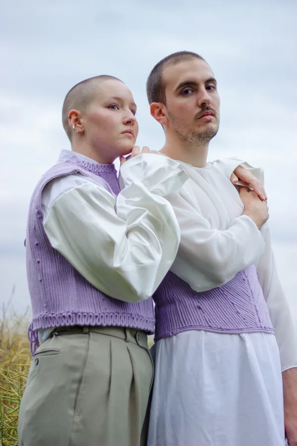
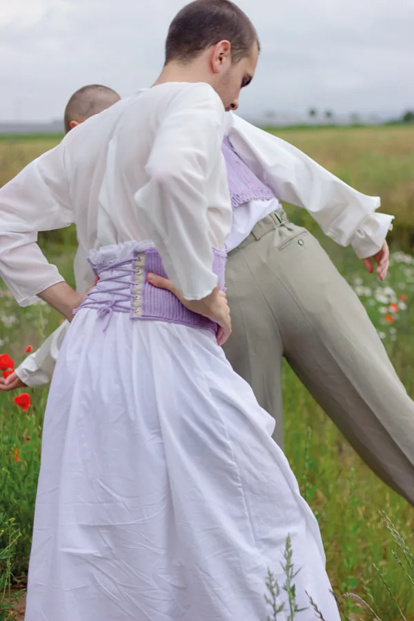
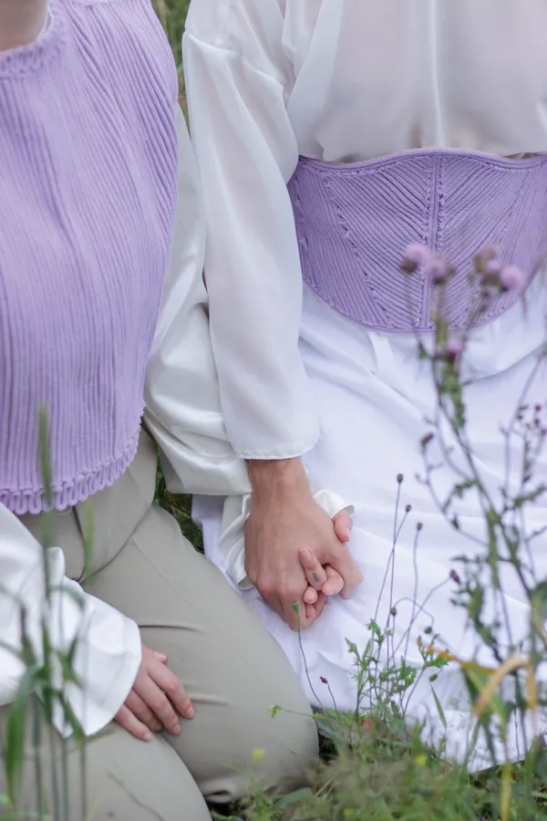
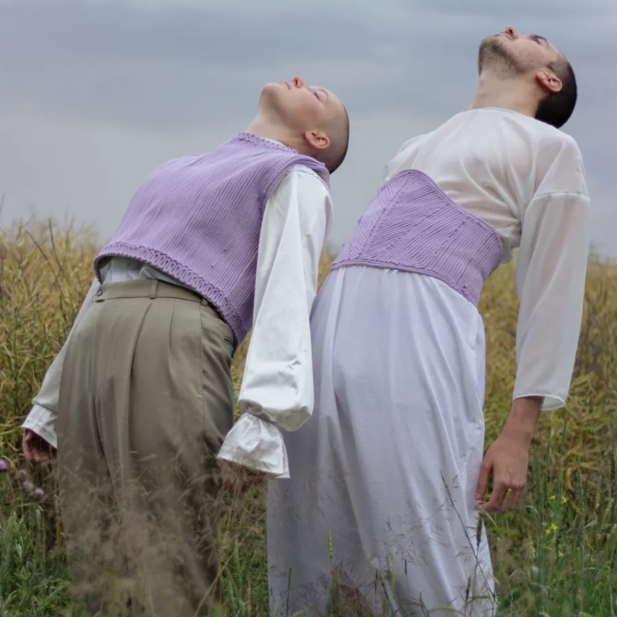

inter
Unisex garments made for the equality of all people.
- Year
- 2021
- Context
- fashion course, 4th semester, University of Applied Sciences Würzburg
- Team
- with Rebecca Burkhardt
- Role
- design, pattern making and sewing (50/50), styling, film, photography, editorial design of the course catalogue
- Tools
- fashion design, upcycling, styling, film, photography, editorial design

01 / Between
Inter stands for "between two or more": for equality, unconditional togetherness and the basic pillar of resilience that these values form. Why should the shells we wear divide and categorize us? We want to break with clichés and roles. Men can wear skirts, too. Clothing is clothing, and we humans are the core.

02 / Garments
All garments are either reassembled from existing clothes or tailored from scratch. The looks combine flowing white blouses and skirts with lilac knitwear and sage-green suit pieces, photographed outdoors with both of us as models. We also filmed the project, and I edited the film. In addition we designed and produced the catalogue for the whole course, from layout to final print.




